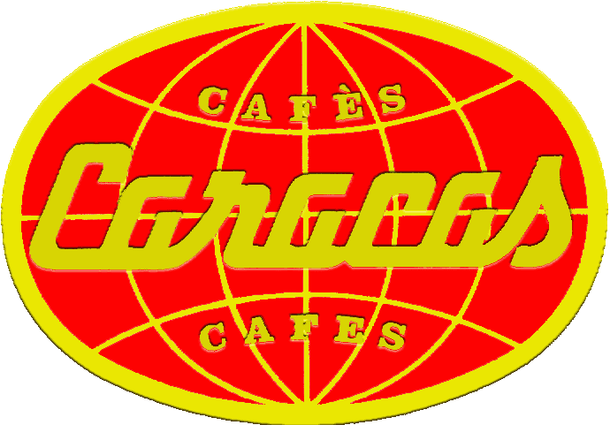

|
| cafès
de : | i també : | ||
| 
| Colòmbia |
· descafeinat de màquina · llet fresca i desnatada · 'barrilito' · 'chupetín' · 'biberón' · capuccino · xocolata · suís · varietat de pastes | ·
entrepans de règim · formatge fresc i 'pavo' · embotit i pernil ibèric · torrades (oli, mantega, melmelada) · vegetals · bikinis i mallorquins · suc de taronja natural · suc pinya, préssec i tomàquet · iogurt natural i descremat... |
|
| Brasil | ||
| | Nova Guinea | ||
| | Costa Rica... |
| més
de 15 anys servint bon cafè a Sant Andreu de Palomar |
carrer Pons i Gallarza, 8 · 933 110 458 · Sant Andreu de Palomar (08030 Barcelona)
 | |
|
|
|
|